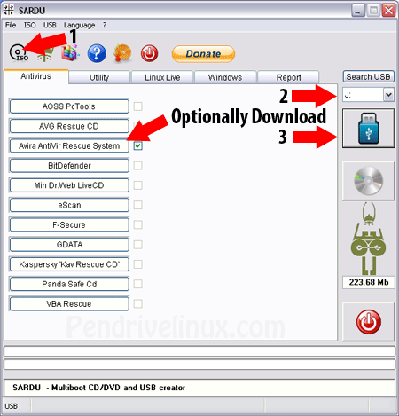

SARDU – Multiboot USB Creator (Windows)
SARDU is another nice Windows based Multiboot USB Creator that can also be used to create Multiboot CD/DVD's. Created by Davide Costa, SARDU enables you to create a Multiboot UFD containing your basic essential Utilities, Antivirus, and Windows XP/7 Installers. On top of that, SARDU offers the built in ability to Defragment your USB Drive, and burn an ISO to CD/DVD.
SARDU – Another Multiboot USB Creator for Windows
Authors Website: http://www.sarducd.it
Simple usage example to create a Multiboot USB:
- Download Unzip and Run latest version of SARDU
- (1) Click the ISO Icon to select the folder containing your ISO's (2) Select your USB Drive (3) Click the USB Icon to Create the Multiboot USB 
- Restart your PC, setting your BIOS or Boot Menu to boot from the Flash Drive. Proceed to boot from the USB and enjoy.